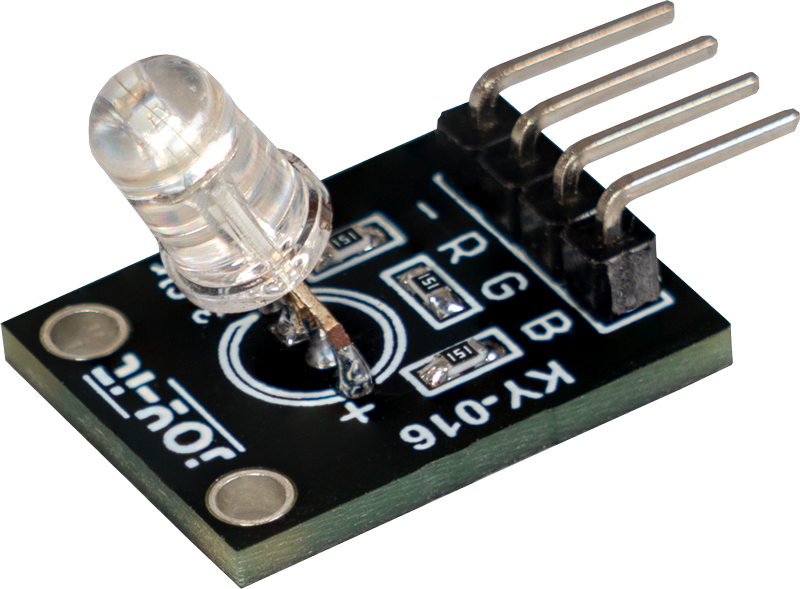
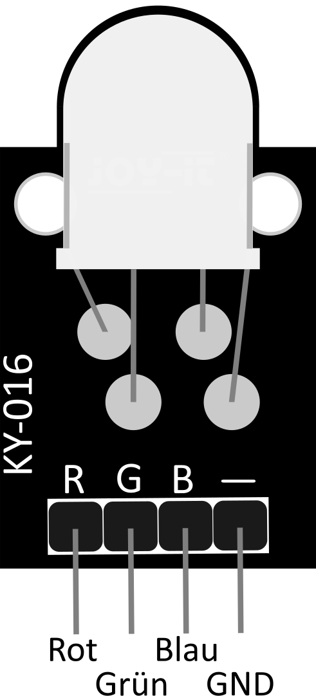
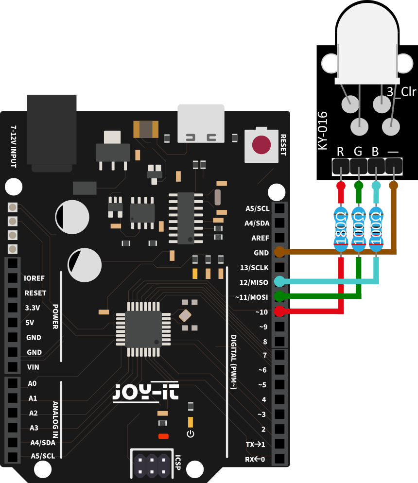

Türchen 5 · Samstag, 5. Dezember 2026
Der Thermometer-Christbaum
Wochenende in der Weihnachtswerkstatt! Die neue RGB-LED macht aus dem Thermometer von Tag 3 einen Christbaum, der mit der Temperatur seine Farbe wechselt.
Heute im Säckchen
KY-016 RGB 5mm LED
LED-Modul welche eine rote, blaue und grüne LED beinhaltet. Diese sind mittels gemeinsamer Kathode miteinander verbunden.

Dieses LED-Modul enthält rote, blaue und grüne LEDs, die über eine gemeinsame Kathode verbunden sind. Die rote LED hat eine Durchlassspannung von 1,8 V, während die grüne und blaue LED jeweils 2,8 V benötigen. Alle LEDs arbeiten bei einem Durchlassstrom von 20 mA. Mit diesem Modul kannst du durch Anpassung der Helligkeit der einzelnen LEDs verschiedene Farben erzeugen. Es eignet sich hervorragend für Anwendungen, bei denen visuelle Signale oder farbige Anzeigen benötigt werden. Die gemeinsame Kathode erleichtert die Schaltung und Integration in verschiedene Projekte, sei es für dekorative Beleuchtung, Statusanzeigen oder andere kreative Anwendungen.
| Technische Daten | |
|---|---|
| Durchlassspannung [Rot] | 1,8 V |
| Durchlassspannung [Grün, Blau] | 2,8 V |
| Durchlassstrom | 20 mA |
Vorwiderstände:
Je nach angesteuerter Farbe, werden andere Vorwiderstände benötigt.
| Eingangsspannung | Vorwiderstand |
|---|---|
| Rot | 180 Ω |
| Grün | 100 Ω |
| Blau | 100 Ω |
Anschlussbelegung


| Arduino | Sensor |
|---|---|
| Pin 10 | LED Rot |
| Pin 11 | LED Grün |
| Pin 12 | LED Blau |
| GND | GND |
Weihnachtswerkstatt mit Bauteilen der letzten Tage
Weihnachtswerkstatt: Der Thermometer-Christbaum
Die neue RGB-LED macht aus dem Temperatursensor von Tag 3 einen Christbaum, der seine Farbe mit der Temperatur ändert: Bei 15 °C und darunter leuchtet er eisblau, bei 30 °C und darüber glühend rot, dazwischen mischen sich die Farben stufenlos.
Verdrahtung
| Komponente | Arduino-Pin | Anschluss am Modul |
|---|---|---|
| KY-016 Rot (über Vorwiderstand) | 9 | LED Rot |
| KY-016 Grün (über Vorwiderstand) | 6 | LED Grün |
| KY-016 Blau (über Vorwiderstand) | 5 | LED Blau |
| KY-016 | GND | GND |
| KY-001 von Tag 3 | 4 | Signal |
| KY-001 von Tag 3 | 5V / GND | +V / GND |
Abweichend vom Artikel liegt die RGB-LED an den Pins 9, 6 und 5: Nur PWM-Pins können die Helligkeit stufenlos regeln, und Pin 12 aus dem Artikel kann das nicht. Diese Belegung verwenden auch alle weiteren Wochenendprojekte. Die Vorwiderstände findest du in der Tabelle im Abschnitt oben.
Ablauf
Einmal pro Sekunde misst der Sketch die Temperatur und rechnet sie in einen Anteil zwischen „kalt“ und „warm“ um. Daraus mischt er Rot und Blau. Den Farbbereich legst du mit KALT und WARM fest.
Bibliotheken
Wie an Tag 3: OneWire und DallasTemperature.
Deine Knobelaufgabe
Im Sketch fehlt der Inhalt der loop()-Funktion. Die Kommentare darin verraten dir, was passieren soll – programmiere es selbst! Die Auflösung findest du morgen ganz unten auf der Seite von Türchen 6.
// Türchen 5: Der Thermometer-Christbaum
// Verdrahtung siehe tag-05.md
// Bibliotheken: OneWire, DallasTemperature
#include <OneWire.h>
#include <DallasTemperature.h>
const char ART[] PROGMEM = R"ART(
*
/o\
/o*o\
/*o*o*\
/o*o*o*o\
/*o*o*o*o*\
|_|
Tuerchen 5: Der Thermometer-Christbaum
)ART";
const int DS18B20_PIN = 4; // KY-001 von Tag 3
const int LED_ROT = 9; // KY-016, alle drei Farben an PWM-Pins
const int LED_GRUEN = 6;
const int LED_BLAU = 5;
const float KALT = 15.0; // ab hier leuchtet der Baum ganz blau
const float WARM = 30.0; // ab hier ganz rot
OneWire oneWire(DS18B20_PIN);
DallasTemperature sensors(&oneWire);
void setzeFarbe(int r, int g, int b) {
analogWrite(LED_ROT, r);
analogWrite(LED_GRUEN, g);
analogWrite(LED_BLAU, b);
}
void setup() {
pinMode(LED_ROT, OUTPUT);
pinMode(LED_GRUEN, OUTPUT);
pinMode(LED_BLAU, OUTPUT);
Serial.begin(9600);
sensors.begin();
Serial.println((const __FlashStringHelper*)ART);
Serial.println("Halte den Sensor in der Hand oder an die kalte Fensterscheibe.");
}
void loop() {
// Temperatur messen wie an Tag 3.
// Bei KALT soll der Baum ganz blau, bei WARM ganz rot leuchten, dazwischen gemischt.
}Das Grundlagen-Beispiel
KY-016 RGB 5mm LED
1. Code-Beispiel: ON/OFF
Dieses Codebeispiel zeigt auf, wie die integrierten LEDs mittels eines definierbaren Ausgangspins abwechselnd, im 3 Sekunden Takt, gewechselt werden können.
Um das folgende Codebeispiel auf deinen Arduino zu laden, empfehlen wir die Verwendung der Arduino IDE. In der IDE kannst du den passenden Port und das richtige Board für dein Gerät auswählen.
Kopiere den unten stehenden Code in deine IDE. Um den Code auf deinen Arduino hochzuladen, klicke einfach auf den Upload-Button.
int led_red = 10; // Pin für rot
int led_green = 11; // Pin für grün
int led_blue = 12; // Pin für blau
void setup() {
// Initialisierung Ausgangspins für die LEDs
pinMode(led_red, OUTPUT);
pinMode(led_green, OUTPUT);
pinMode(led_blue, OUTPUT);
}
// Hauptprogrammschleife
void loop () {
digitalWrite(led_red, HIGH); // rote LED wird eingeschaltet
digitalWrite(led_green, LOW); // grüne LED wird ausgeschaltet
digitalWrite(led_blue, LOW); // blaue LED wird ausgeschaltet
delay(3000); // Warte für 3 Sekunden
digitalWrite(led_red, LOW); // rote LED wird ausgeschaltet
digitalWrite(led_green, HIGH); // grüne LED wird eingeschaltet
digitalWrite(led_blue, LOW); // blaue LED wird ausgeschaltet
delay(3000); // Warte für 3 Sekunden
digitalWrite(led_red, LOW); // rote LED wird ausgeschaltet
digitalWrite(led_green, LOW); // grüne LED wird ausgeschaltet
digitalWrite(led_blue, HIGH); // blaue LED wird eingeschaltet
delay(3000); // Warte für 3 Sekunden
}2. Code-Beispiel: PWM
Mittels Puls-Weiten-Modulation [PWM] lässt sich die Helligkeit einer LED regulieren - dabei wird die LED in bestimmten Zeitintervallen ein und ausgeschaltet, wobei das Verhältnis der Einschalt- und Ausschaltzeit einer relativen Helligkeit entspricht. Aufgrund der Trägheit des menschlichen Sehvermögens, interpretieren die menschlichen Augen ein solches Ein-/Ausschaltverhalten als Helligkeitsänderung. Nähere Informationen zu diesem Thema findest du in diesem Artikel von mikrokontroller.net.
In diesem Modul sind mehrere LEDs integriert. Durch die Überlagerung von unterschiedlichen Helligkeitsstufen lassen sich somit verschiedene Farben kreieren. Dieses wird im folgenden Codebeispiel gezeigt.
Um das folgende Codebeispiel auf deinen Arduino zu laden, empfehlen wir die Verwendung der Arduino IDE. In der IDE kannst du den passenden Port und das richtige Board für dein Gerät auswählen.
Kopiere den unten stehenden Code in deine IDE. Um den Code auf deinen Arduino hochzuladen, klicke einfach auf den Upload-Button.
int led_red = 10; // Pin für rot
int led_green = 11; // Pin für grün
int led_blue = 12; // Pin für blau
void setup() {
// Initialisierung Ausgangspins für die LEDs
pinMode(led_red, OUTPUT);
pinMode(led_green, OUTPUT);
pinMode(led_blue, OUTPUT);
}
void loop() {
// Innerhalb einer For-Schleife werden den drei LEDs verschiedene PWM-Werte uebergeben
// Dadurch entsteht ein Farbverlauf, in dem sich durch das Vermischen unterschiedlicher
// Helligkeitstufen der beiden integrierten LEDs, unterschiedliche Farben entstehen
for(int i = 255; i > 0; i--) {
analogWrite(led_blue, i);
analogWrite(led_green, 255 - i);
analogWrite(led_red, 128 - i);
delay(10);
}
// In der zweiten For-Schleife wird der Farbverlauf rückwärts durchgegangen
for(int i = 0; i < 255; i++) {
analogWrite(led_blue, i);
analogWrite(led_green, 255 - i);
analogWrite(led_red, 128 - i);
delay(10);
}
}Lösung für Tag 4 anzeigen
// Auflösung zu Türchen 4: Der Eisblumen-Wächter
// Verdrahtung wie im Artikel KY-028 (A0 analog, Pin 3 digital)
const char ART[] PROGMEM = R"ART(
\ | /
-- \ | / --
\|/
------*------
/|\
-- / | \ --
/ | \
Tuerchen 4: Der Eisblumen-Waechter
)ART";
const int analog_input = A0; // KY-028 analoger Messwert
const int digital_input = 3; // KY-028, HIGH = Schwelle am Poti erreicht
// Je nach Einstellung des Potis bedeutet „Schwelle erreicht“ wärmer oder kälter.
// Zeigt der Wächter verkehrt herum an, setze diesen Wert auf false.
const bool FROST_BEI_HIGH = true;
bool frostVorher = false;
float startSpannung;
void setup() {
pinMode(analog_input, INPUT);
pinMode(digital_input, INPUT);
Serial.begin(9600);
Serial.println((const __FlashStringHelper*)ART);
startSpannung = analogRead(analog_input) * (5.0 / 1023.0);
}
void loop() {
float spannung = analogRead(analog_input) * (5.0 / 1023.0);
bool frost = (digitalRead(digital_input) == HIGH) == FROST_BEI_HIGH;
if (frost && !frostVorher) {
Serial.println("Eisblumen-Gefahr! Am Fenster wird es frostig.");
} else if (!frost && frostVorher) {
Serial.println("Entwarnung: Die Eisblumen tauen wieder.");
}
frostVorher = frost;
Serial.print("Spannung: ");
Serial.print(spannung, 3);
Serial.print(" V, Änderung seit Start: ");
Serial.print(spannung - startSpannung, 3);
Serial.println(" V");
delay(1000);
}